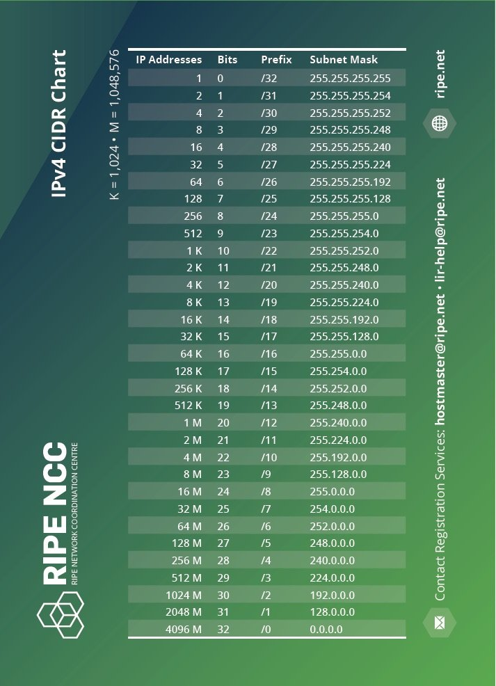
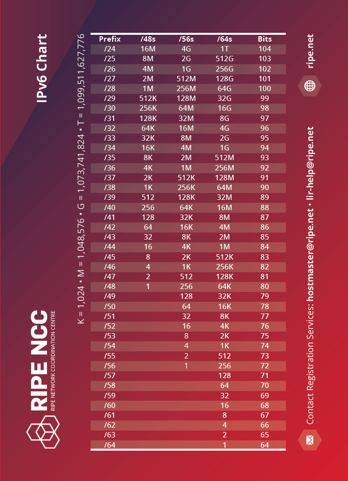

CIDR Cheatsheets
CIDR Notation: Your Shortcut to Subnet Mastery Ever stared at a /27 and felt like it was judging you? Been there. Whether you’re diving into lab builds or trying to squeeze the most out of your IPv4 ranges, CIDR isn’t just notation—it’s strategy.
Grab the sheets, print them, laminate them, tape them to your monitor—whatever helps.
Understanding IP Addressing and CIDR Charts

